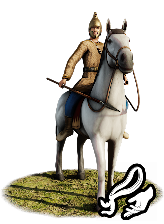
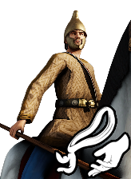
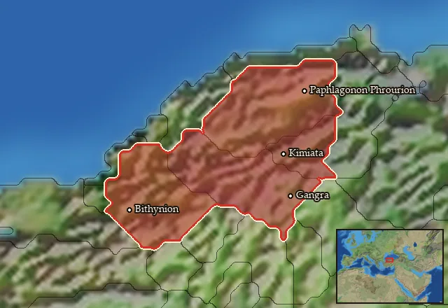

RTR: Imperium Surrectum
RTR: Imperium SurrectumPaphlagonian Light Cavalry


Class: light · Category: cavalry · Men per unit: 30
Description
Fast, reliable, and lightly armoured, these brave Paphlagonians are a highly effective cavalry arm dedicated to securing the army's flanks. Their lack of heavy armour does not stop them from engaging and holding down the heavier units of their neighbours. Indeed, with proper support, they can defeat and rout their enemies with ease. Remarkably, these men are able to stand their ground much longer than other cavalry of this type. One must remember that the Paphlagonians are a fiercely independent people, and thanks to their arms and diplomatic intelligence they can remain so, despite being surrounded by some of the strongest powers in the ancient world. As is common in Paphlagonia, these men wear woven helmets, Phrygian caps, and helmets as well as holding a short spear for combat. They use no shields, however, their speed and good morale allow them to charge their enemies, strike terror, and recover in time for another charge.
Historical background
Historically, Paphlagonian cavalry was highly valued across the ancient world, and widely used as highly specialized mercenaries. Regarding their equipment, Herodotus observes that: “The Paphlagonians in the army had woven helmets on their heads, and small shields and short spears, and also javelins and daggers; they wore their native shoes that reach midway to the knee" (Herodotus, The Histories, VII, 72). The most detailed description of Paphlagonian cavalry in action, however, comes from Xenophon's history of Greece (Hellenica, 4.1.2–28), in a passage on the Spartan campaigns in Asia Minor. In this story, a Persian noble named Spithridates defects from the satrap Pharnabazus to join the Spartan king Agesilaus. Spithridates convinces the king of Paphlagonia, Otys, to ally with the Spartans. King Otys promptly provides Agesilaus with 1,000 Paphlagonian cavalry and 2,000 light infantry (peltasts) which are then used on a raid on Pharnabazus’ personal camp, which scatters the Persian forces and allows to capture immense booty. However, following this victory, a Spartan officer named Herippidas takes all their plunder. Insulted and deeply dishonoured by this act, Spithridates and the entire Paphlagonian cavalry pack up in the middle of the night and desert Agesilaus, marching to Sardis to join Ariaeus. Xenophon notes that Agesilaus was deeply grieved by this loss, as the Paphlagonians were a magnificent and highly effective cavalry force:
“It was the third or fourth day after this that Spithridates made a discovery: Pharnabazus lay encamped in Caue, a large village not more than eighteen miles away. This news he lost no time in reporting to Herippidas. The latter, who was longing for some brilliant exploit, begged Agesilaus to furnish him with two thousand hoplites, an equal number of peltasts, and some cavalry – the latter to consist of the horsemen of Spithridates, the Paphlagonians, and as many Hellene troopers as he might perchance persuade to follow him. Having got the promise of them from Agesilaus, he proceeded to take the auspices. Towards late afternoon he obtained favourable omens and broke off the sacrifice. Thereupon he ordered the troops to get their evening meal, after which they were to present themselves in front of the camp. But by the time darkness had closed in, not one half of them had come out. To abandon the project was to call down the ridicule of the rest of the Thirty. So he set out with the force to hand, and about daylight, falling on the camp of Pharnabazus, put many of his advanced guard of Mysians to the sword. The men themselves made good their escape in different directions, but the camp was taken, and with it divers goblets and other gear such as a man like Pharnabazus would have, not to speak of much baggage and many baggage animals. It was the dread of being surrounded and besieged, if he should establish himself for long at any one spot, which induced Pharnabazus to flee in gipsy fashion from point to point over the country, carefully obliterating his encampments. Now as the Paphlagonians and Spithridates brought back the captured property, they were met by Herippidas with his brigadiers and captains, who stopped them and relieved them of all they had; the object being to have as large a list as possible of captures to deliver over to the officers who superintended the sale of booty. This treatment the Asiatics found intolerable. They deemed themselves at once injured and insulted, got their kit together in the night, and made off in the direction of Sardis to join Ariaeus without mistrust, seeing that he too had revolted and gone to war with the king. On Agesilaus himself no heavier blow fell during the whole campaign than the desertion of Spithridates and Megabates and the Paphlagonians.”
During the 4th century BC, the Bosporan Kingdom was ruled by the Spartokid dynasty, notably King Leukon I (389–349 BC). Leukon aggressively expanded his empire by launching military campaigns across the Kerch Strait into the Taman Peninsula and pushing north toward the Don River to conquer the Sindi and subjugate the Maeotian tribes, a collective group of semi-nomadic warrior tribes who lived along the shores of the Sea of Azov (known in antiquity as the Palus Maeotis). To fight these northern steppe and marsh tribes, the Bosporan kings recruited highly specialised foreign troops. Because of their reputation, Paphlagonian horsemen were hired as elite mercenary cavalry to spearhead these campaigns. Drosanis was one of these horsemen. He travelled all the way from northern Anatolia to Crimea, fought a campaign in the treacherous marshes of the Sea of Azov, died in battle, and was brought back to the capital of Pantikapaion to be buried with military honours. We know of this thanks to a 4th-century BC gravestone written in ancient Greek that was found in 1869 within the "Tatar suburb" (suburbio Tatarico) of Kerch, buried in the ancient necropolis of Pantikapaion (KBN 180 = IOSPE II, 296). The inscription honours a Paphlagonian mercenary named Drosanis and notes that he died "fighting in [the land of] the Maeotes".
Stats
| Rank in roster | Rank in roster | Rank in roster | Rank in roster | ||||||||
|---|---|---|---|---|---|---|---|---|---|---|---|
| Men per unit | 30 | █········· 8% | Attack | 8 | █········· 11% | Charge bonus | 25 | ████████·· 83% | Defence | 18 | ██········ 16% |
| · armour | 2 | █········· 13% | · defence skill | 16 | ███······· 28% | · shield | 0 | █········· 0% | Morale | 10 | ███······· 30% |
| Discipline | Impetuous (may charge without orders) | Training | Highly trained | Recruitment cost | 1,604 dn | ███······· 25% | Upkeep per turn | 646 dn | █████····· 51% | ||
| Turns to recruit | 2 |
Weapons
| Primary | Secondary | Primary | Secondary | Primary | Secondary | Primary | Secondary | ||||
|---|---|---|---|---|---|---|---|---|---|---|---|
| Attack | 8 | 8 | Charge bonus | 25 | 20 | Type | melee · blade | melee · blade | Damage | piercing | piercing |
Defence
| Primary | Secondary | Primary | Secondary | Primary | Secondary | Primary | Secondary | ||||
|---|---|---|---|---|---|---|---|---|---|---|---|
| Total | 18 | — | Armour | 2 | — | Defence skill | 16 | — | Shield | 0 | — |
Condition and terrain
| Hit points | 1 | Mount | light horse | Ground: scrub / sand / forest / snow | -1 / 0 / -6 / 0 | Charge distance | 40 |
| Formations | Square |
Technical stats
| Time between blows (primary / secondary) | 2.5 s / 2.5 s | Extra fatigue in hot climates | 0 | Spacing between men: close / loose | 2 × 4.8 m / 3 × 7.2 m | Default ranks | 5 |
In battle: Very good stamina
Who can recruit it
A core roster unit for one faction, which can raise it anywhere it holds the right building:
Any faction holding one of the provinces below can field it.
Exactly what a settlement must have, route by route (4)
| Building | Also requires | Building | Also requires | Building | Also requires | Building | Also requires |
|---|---|---|---|---|---|---|---|
| Any settlement | Garrison Building or Tier 1 Military Industrial Complex · Paphlagonian area of recruitment · Any Government (Dependency, Indirect Rule or Direct Rule) · Tier 2 Colony not built | Indirect Rule | Garrison Building or Tier 1 Military Industrial Complex · Tier 1 Colony | Direct Rule | Garrison Building or Tier 1 Military Industrial Complex · Tier 1 Colony | Homeland | Garrison Building or Tier 1 Military Industrial Complex |
Areas of recruitment

| Zone | Provinces | ||||||
|---|---|---|---|---|---|---|---|
| Paphlagonian | 4 |